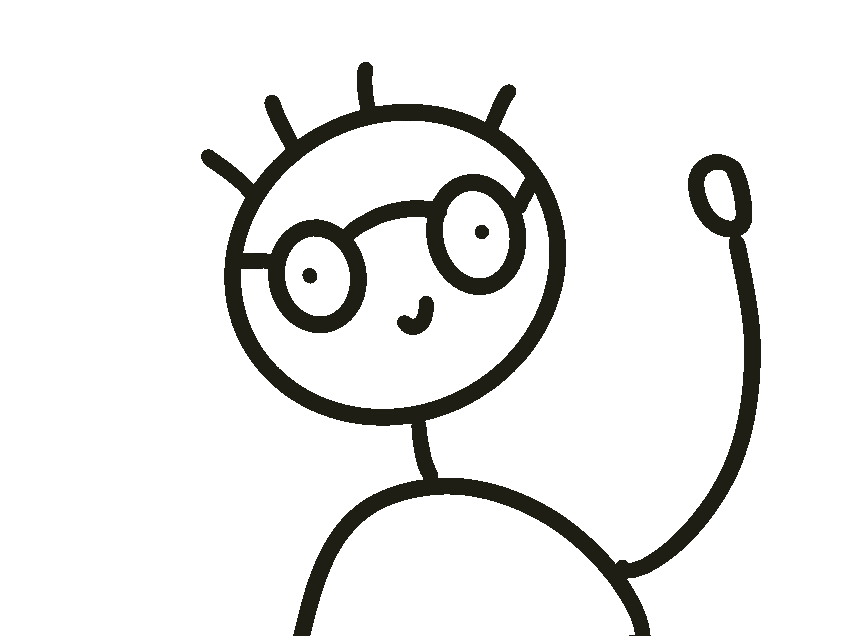

↓ scroll down into the pinned section ↓

Napkins, printer paper, sketchbooks or just my mind, my projects start from a simple idea that is brought to reality. If you need a creative developer, a technical designer, or anything in between, I can bring a new perspective to your vision.
I'm Dylan, a 2nd-year computer science and engineering student at Northeastern University. You can usually find me hopping between Boston and New York City, wandering around capturing urban experiences on my camera or absorbing inspiration for my next project.
Download Resumethe pin has released — normal scroll resumes here
(imagine the Experience timeline here)